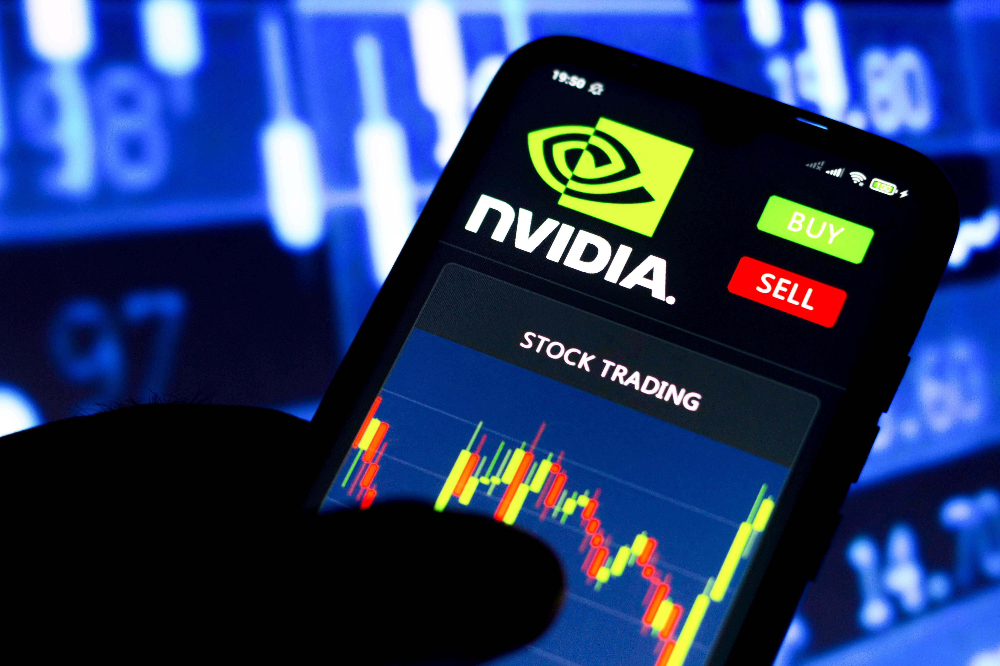

Author: Jane Doe
Date: June 18, 2024
Nvidia's stock has surged dramatically, reaching a market valuation of $591,078 billion, marking a significant milestone in the company's history. The journey to becoming the most valuable stock was characterized by multiple phases of growth and strategic decisions.
In the early stages, Nvidia focused on developing high-performance graphics processing units (GPUs), which quickly became popular in the gaming industry. This initial success laid the foundation for future growth.
As demand for data centers grew, Nvidia capitalized on this trend by expanding its product offerings to include GPUs for artificial intelligence (AI) and machine learning applications. This move significantly boosted the company's revenue and market value.
Nvidia's strategic acquisitions, such as the purchase of Mellanox Technologies, played a crucial role in enhancing its technological capabilities and market reach. These acquisitions helped Nvidia secure a strong foothold in various high-growth markets.
The company's focus on AI and autonomous driving technologies further propelled its stock value. Partnerships with major automotive companies and advancements in AI research positioned Nvidia as a leader in these innovative fields.
Nvidia's remarkable rally to becoming the most valuable stock exemplifies the power of strategic growth and innovation. As the company continues to push the boundaries of technology, its future prospects remain highly promising.